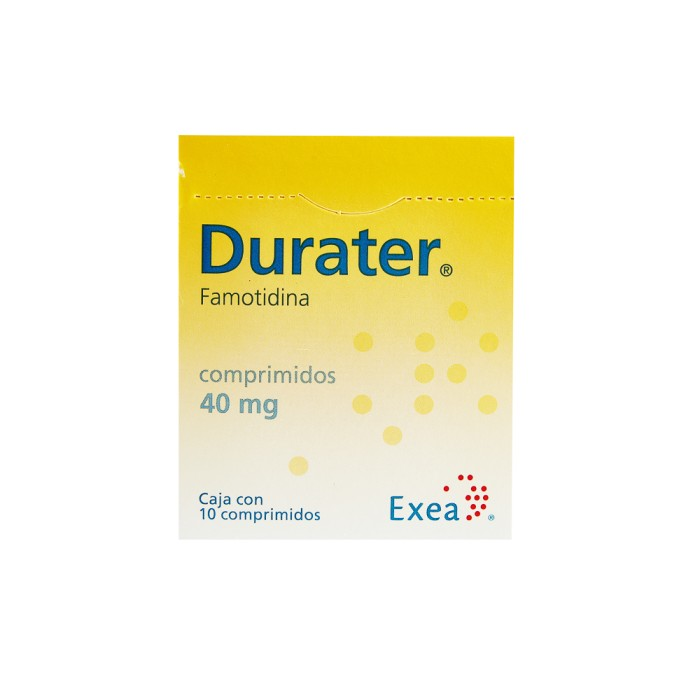

←
ANTIHISTAMÍNICOS H2

Mecanismo de acción
- Son antagonistas competitivos del receptor H2 de histamina, que se encuentra principalmente en células parietales gástricas.
- Inhiben la secreción de ácido clorhídrico inducida por:
- Histamina (H2)
- Gastrina
- Acetilcolina
- Disminuyen el volumen y la concentración de ácido gástrico basal y nocturno.
Indicaciones terapéuticas
- Úlcera gástrica y duodenal.
- Enfermedad por reflujo gastroesofágico (ERGE).
- Gastritis, dispepsia funcional.
- Síndrome de Zollinger-Ellison.
- Profilaxis de úlcera por estrés en pacientes hospitalizados.
Contraindicaciones
- Hipersensibilidad al fármaco.
- Insuficiencia renal grave (ajustar dosis).
- Embarazo y lactancia (consultar riesgo/beneficio).
Vía de administración
- Oral: tabletas, cápsulas.
- Inyectable: solución IV (famotidina).
Posología
- Famotidina:
- Adultos: 20 mg cada 12 h o 40 mg en la noche (ulceras/ERGE).
- Prevención de úlcera por estrés: 20-40 mg IV cada 12 h.
- Niños: ajustar por peso; uso fuera de etiqueta en menores.
- Nizatidina:
- Adultos: 150 mg cada 12 h o 300 mg en la noche.
- Insuficiencia renal: reducir dosis.
Reacciones adversas
- Diarrea, estreñimiento.
- Mareo, fatiga, cefalea.
- Alteraciones hepáticas (raras).
- Confusión en ancianos (más frecuente con cimetidina).
- Nizatidina: náuseas, aumento de transaminasas (ocasional).
Interacciones medicamentosas
- Disminuyen absorción de fármacos que requieren pH ácido (ketoconazol, atazanavir).
- Antiácidos pueden disminuir su absorción.
- Menos interacciones que cimetidina (que inhibe CYP450 fuertemente).
Presentación
- Famotidina
- Pepcid AC® - Tabletas 10 y 20 mg.
- Famonix® (Siegfried Rhein) - Ampollas IV 20 mg.
- Nizatidina
- Axid® - Cápsulas 150 y 300 mg.
- Nidazol® - Cápsulas 150 mg.